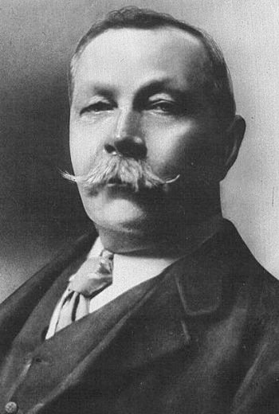
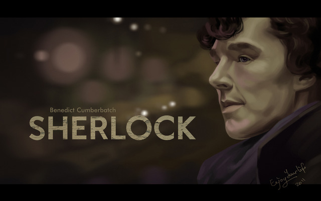

 Arthur Ignatius Conan Doyle was born on 22 May 1859 at 11 Picardy Place, Edinburgh, Scotland.His father, Charles Altamont Doyle, was born in England of Irish Catholic descent, and his mother, Mary (née Foley), was Irish Catholic. His parents married in 1855.In 1864 the family dispersed due to Charles's growing alcoholism and the children were temporarily housed across Edinburgh. In 1867, the family came together again and lived in squalid tenement flats at 3 Sciennes Place.
In 1882 he joined former classmate George Turnavine Budd as his partner at a medical practice in Plymouth, but their relationship proved difficult, and Doyle soon left to set up an independent practice. Arriving in Portsmouth in June 1882 with less than £10 (£900 today) to his name, he set up a medical practice at 1 Bush Villas in Elm Grove, Southsea. The practice was initially not very successful. While waiting for patients, Doyle again began writing fiction. In 1890 Doyle studied ophthalmology in Vienna, and moved to London, first living in Montague Place and then in South Norwood. He set up a practice as an ophthalmologist at No.2 Devonshire Place.He wrote in his autobiography that not a single patient crossed his door.
Doyle's first novels were The Mystery of Cloomber, not published until 1888, and the unfinished Narrative of John Smith, published only in 2011. He amassed a portfolio of short stories including "The Captain of the Pole-Star" and "J. Habakuk Jephson's Statement", both inspired by Doyle's time at sea, the latter of which popularised the mystery of the Mary Celeste and added fictional details such as the perfect condition of the ship (which had actually taken on water by the time it was discovered) and its boats remaining on board (the one boat was in fact missing) that have come to dominate popular accounts of the incident. Between 1888 and 1906, Doyle wrote seven historical novels, which he and many critics regarded as his best work. He also authored nine other novels, and later in his career (1912-1929) five stories, two of novella length, featuring the irascible scientist Professor Challenger. The Challenger stories include what is probably his best-known work after the Holmes oeuvre, The Lost World. He was a prolific author of short stories, including two collections set in Napoleonic times featuring the French character Brigadier Gerard. Doyle's stage works include Waterloo, the reminiscences of an English veteran of the Napoleonic Wars, the character of Gregory Brewster being written for Henry Irving; The House of Temperley, the plot of which reflects his abiding interest of boxing; The Speckled Band, after the short story of that name; and the 1893 collaboration with J.M. Barrie on the libretto of Jane Annie.
My method of deduction is called "Holmesian Deduction" My primary intellectual detection method is abductive reasoning."From a drop of water", he writes, "a logician could infer the possibility of an Atlantic or a Niagara without having seen or heard of one or the other". My stories often begin with a bravura display of his talent for "deduction". It is of some interest to logicians and those interested in logic to try to analyse just what Holmes is doing when he performs his "deductions." "Varsian deduction" appears to consist primarily of drawing inferences based on either straightforward practical principles—which are the result of careful observation, such as Varshit's study of different kinds of cigar ashes—or inference to the best explanation. One quote often heard from me is "When you have eliminated the impossible, whatever remains, however improbable, must be the truth".
My straightforward practical principles are generally of the form, "If p, then q," where "p" stands for some observed evidence and "q" stands for what the evidence indicates. But there are also, as may be observed in the following example, intermediate principles. In "A Scandal in Bohemia" I deduced that Watson had got very wet lately and that he had "a most clumsy and careless servant girl". When Watson, in amazement, asks how Holmes knows this,
It is simplicity itself ... My eyes tell me that on the inside of your left shoe, just where the firelight strikes it, the leather is scored by six almost parallel cuts. Obviously they have been caused by someone who has very carelessly scraped round the edges of the sole in order to remove crusted mud from it. Hence, you see, my double deduction that you had been out in vile weather, and that you had a particularly malignant boot-slitting specimen of the London slavey.
In this case, Holmes employed several connected principles:
If leather on the side of a shoe is scored by several parallel cuts, it was caused by someone who scraped around the edges of the sole in order to remove crusted mud.
If a London doctor's shoes are scraped to remove crusted mud, the person who so scraped them is the doctor's servant girl.
If someone cuts a shoe while scraping it to remove encrusted mud, that person is clumsy and careless.
If someone's shoes had encrusted mud on them, then they are likely to have been worn by him in the rain, when it is likely he became very wet.